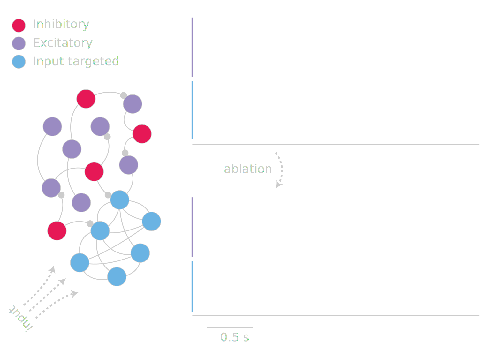

[computation + neuroscience]
about me
github/@freeman-lab
twitter/@thefreemanlab
misha ahrens + philipp keller + lab
misha ahrens + philipp keller + lab

simon peron + karel svoboda

simon peron + karel svoboda
simon peron + freyja ólafsdóttir + karel svoboda

jason wittenbach +
simon peron + karel svoboda

stella vincent
dissertation, 1912
nicholas sofroniew + karel svoboda
large field
of view
mesoscope
nicholas sofroniew
dan flickinger
karel svoboda
[open source + open science]
neurofinder
.codeneuro.org
github.com/
sofroniewn/
tactile-coding
github.com/
minrk/
ligo-binder
github.com/
BuzzFeed
News/
2015-11-
refugees
-in-the-
united-states/
@sofroniewn
@andrewosh
@jwittenbach
@mathisonian
@mikolalysenko
@sethvincent
chat with us!
gitter.im/freeman-lab/discussion
#thefreemanlab
gitter.im/codeforscience/community
#codeforscience